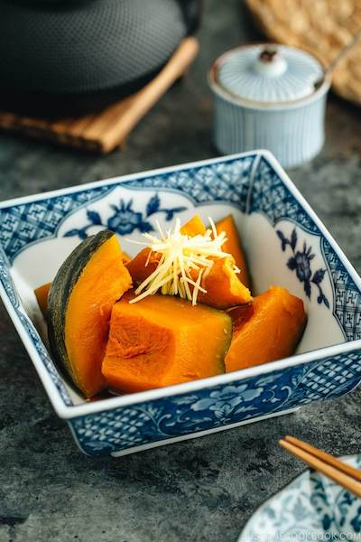

Braised-Kabocha

Description
Cooked in savory dashi broth seasoned with soy sauce and sake, this classic Japanese Simmered Kabocha makes a
great healthy side dish that is chock-full of nutrients.
Ingredients
- Kabocha
- Japanese multipurpose sauce
- water
- Salt
- Pepper
Steps
- Cut the skin off of kabocha then cut it into cubes.
- Boil the water with multipurpose sauce
- Put kabocha in the pot
- Leave in there for 15minutes.
- Add salt and pepper for your liking
- Bon Appetit!
Back